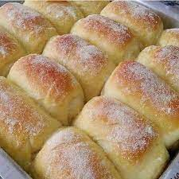

Pão de milho

Receita simples, rápida e saborosa. Pode ser servida no café da manhã e no lanche da tarde.
Ingredientes
- 3 colheres de sopa de fubá
- 1 Ovo
- 1 colher de chá de fermento
- 7 colheres de sopa de leite
- 3 colheres de sopa de oleo
- Sal ou açucar a gosto
Modo de preparo
- Em uma tigela, misturar todos os Ingredientes
- Após misturados, despejar o conteúdo em uma frigideira previamente untada.
- Virar assim que possivel